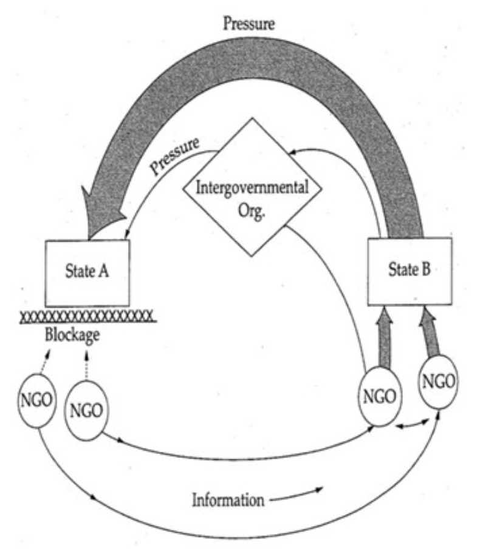
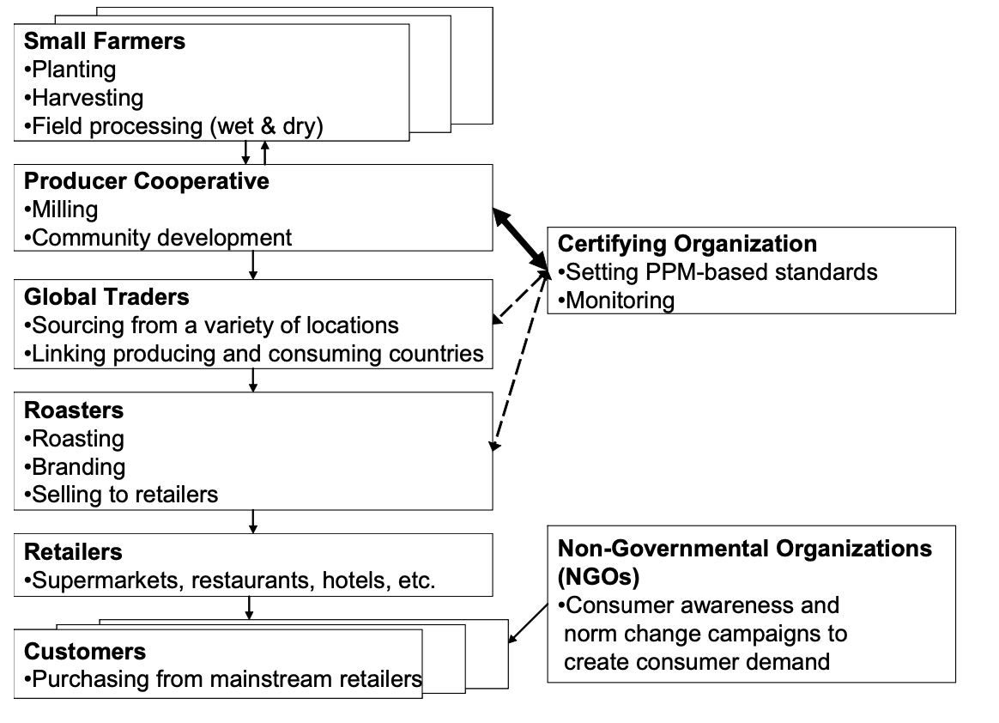

Global Business
INTL-I103 | Day 16 — Private Power Over Supply Chains: Advocacy & Self-Regulation
October 19, 2026
Today’s Plan
Today’s Big Question
When no single government can govern a global supply chain, who does?
| Section | What we’ll cover |
|---|---|
| 1 · How supply chains complicate power | Ruggie revisited |
| 2 · Who governs the supply chain? | Five types of value-chain governance, and coffee as an example |
| 3 · Regulation from outside | Keck & Sikkink: how advocacy networks without traditional power discipline firms |
| 4 · Regulation from inside | Firms as regulators, and why standards fade below Tier 1 (Villena & Gioia) |
| 5 · The limits of private power | What private regulation can and cannot do |
How supply chains complicate power
How lead firms organize production
- Lead firm: the brand or buyer that designs, coordinates, and sells the final product
- Foreign direct investment: the lead firm owns production abroad (a subsidiary)
- Subcontracting: an independent firm makes goods to the lead firm’s specifications
- Licensing: another firm uses the lead firm’s brand or technology, for a fee and on its terms
- Tier 1, 2, 3 suppliers: direct suppliers, their suppliers, and the producers of raw materials
About 80% of global trade runs through multinationals’ production networks, and most of those links are contracts, not ownership.
Source: Ruggie (2018), citing UNCTAD (2013)
Power and authority without ownership
Power: getting others to do what they otherwise would not
Authority: a recognized right to make the rules
Relative autonomy: on whose behalf the firm acts (its own? its buyer? its investors? its home government?)
- Set product and process standards that cascade down supply chains
- Set prices, volumes, and deadlines, and switch suppliers, shifting risk onto them (structural power)
- Impose codes of conduct through contracts: rules suppliers accept, which host states could not impose
- Hold suppliers accountable in law: each supplier is a separate legal entity
- See past Tier 1: no contract with Tier 2 or 3 suppliers, and often no knowledge of who they are
- Monitor what they can see: suppliers know more than the buyer (Day 8’s principal–agent problem)
How much control a lead firm has over its suppliers depends on how the supply chain is governed.
Sources: Ruggie (2018), Regulation & Governance; Villena & Gioia (2020), Harvard Business Review
Who governs the supply chain?
Five ways to govern a supply chain
Value-chain governance: who sets the terms of production along a supply chain, and how they enforce them
Source: redrawn from Gereffi, Humphrey & Sturgeon (2005), “The Governance of Global Value Chains,” Review of International Political Economy 12(1)
Coffee: a captive supply chain
Source: Ransom (2006), The No-Nonsense Guide to Fair Trade, p. 20
- Coffee is a commodity: undifferentiated, grown by many smallholders
- A handful of buyers: five firms controlled 75–80% of the U.S. coffee market (UNCTAD 2007)
- Brands buy the beans; they don’t grow them. Value sits downstream (Day 3’s smile curve)
Growers depend on a few buyers who set price and quality terms: a captive supply chain, where power sits with the lead firm.
Captive (Gereffi, Humphrey & Sturgeon) and buyer-driven (Gereffi’s earlier term) describe the same thing: buyers, not producers, govern the supply chain.
If the buyers hold the power in the supply chain, who can hold the buyers to account?
Regulation from outside
Transnational advocacy networks

Source: Keck & Sikkink (1998), Activists Beyond Borders
Transnational advocacy network (TAN): activists, NGOs, unions, journalists, and sympathetic officials who work across borders on a shared cause
Boomerang model: when their own government will not respond, domestic groups go around it
- Pass information to allies abroad
- Allies press their own governments, international organizations, and other powerful actors
- Those actors bring pressure back on the unresponsive government
Built to explain changes in human rights law; the same logic applies to labor standards, the environment, and firms.
Which of Ruggie’s three faces of power do TANs wield?
Source: Keck & Sikkink (1999), pp. 89–93
Four tactics
“the ability to move politically usable information quickly and credibly to where it will have the most impact”
“the ability to call upon symbols, actions or stories that make sense of a situation or claim for an audience that is frequently far away”
“the ability to call upon powerful actors to affect a situation where weaker members of a network are unlikely to have influence”
“the effort to oblige more powerful actors to act on vaguer policies or principles they formally endorsed”
Apply it: ExxonMobil in Aceh (Day 7). Acehnese student activists in the U.S. brought their case to Terry Collingsworth of the International Labor Rights Forum. He slipped into villages near the gas fields to interview victims and witnesses, then filed John Doe I v. ExxonMobil (2001) in federal court in Washington. Which of the four tactics did this network use? Why sue in Washington rather than in Indonesia?
Sources: Keck & Sikkink (1999), pp. 95–98; Coll (2012), Private Empire, ch. 4. “Against a firm” lines are our applications.
The boomerang, applied to pressure firms
Ethiopia sought trademarks for its coffee names (Sidamo, Yirgacheffe); Starbucks resisted. NGOs campaigned; Starbucks relented and signed a licensing and promotion agreement.
When does it work? (Keck & Sikkink 1999, pp. 97–98)
- Issues of bodily harm to vulnerable individuals, with “a short and clear causal chain” of responsibility
- Targets that value reputation: Starbucks’s brand depends on social responsibility
- Networks with the “strength and density” to achieve leverage
Would Folgers have made the same choice?
Regulation from inside
Why would a firm regulate itself?

A certified coffee supply chain: a private certifier sets and monitors standards; NGOs build consumer demand
Corporate social responsibility is private regulation: not encoded in law, but created and enforced through private contracts.
Why would a firm do this?
- Product quality in high-end markets
- Financial risk: investors price supply-chain scandals (ESG)
- Brand protection: well-known brands are prime targets of spotlight campaigns
Certification (Fair Trade) tries to de-commodify the product, and covers only a small share of the global coffee market.
A firm can write a code of conduct for its suppliers. But how can those standards actually be enforced?
Villena and Gioia: Standards cascades don’t work
The study: three multinationals chosen as sustainability leaders (automotive, electronics, pharmaceuticals/consumer products); 9 first-tier and 22 lower-tier suppliers in Mexico, China, Taiwan, and the U.S.
5 of 5 lower-tier suppliers had no environmental management system; turnover sometimes reached 100%
All 10 had marginal environmental practices, dangerous conditions, and chronic overtime
3 of 7 had high concentrations of airborne chemicals and no systematic accident reporting
“The hoped-for cascade effect was seldom occurring.” If the leaders cannot get standards past Tier 1, ordinary firms are likely doing worse.
Source: Villena & Gioia (2020), p. 88
Why standards stall below Tier 1
“The problem, ironically, often starts with the MNCs themselves”: orders beyond capacity, unrealistic deadlines
“We don’t comply with this requirement ourselves, so how could we ask our own suppliers to do so?”
A seat maker’s foam supplier also sells to electronics, appliance, and health care firms; automakers are a small fraction of its business
Lower-tier suppliers “receive relatively little attention and pressure from the media, NGOs, and other stakeholders”
Little expertise, and home regulation that is “nonexistent, lax, or not enforced at all”
“The demon in this place… is the [lower-tier] suppliers that I know the least about.”
Below Tier 1, the lead firm’s relationship looks less like a captive supply chain and more like a market: the lead firm does not have the power or the authority to impose enforceable standards.
Source: Villena & Gioia (2020), “A More Sustainable Supply Chain,” Harvard Business Review, p. 88
Four ways to reach the lower tiers
Evaluate Tier 1 on how it manages its own suppliers; survey suppliers; map the supply network with major Tier 1 suppliers
Train Tier 1 procurement staff; pilot with high performers; reward suppliers that cascade requirements (awards, long-term contracts, preferred status)
Industry-wide standards and shared audits. Responsible Business Alliance members audit at least 25% of their high-risk suppliers’ facilities each year
Work with NGOs and international institutions: UN Global Compact; CDP’s supply-chain disclosure program
Major firms share many of the same suppliers, so “a single MNC cannot be expected to fight alone” (p. 91). Collective approaches pool buyers’ leverage: a collective-action problem, solved privately rather than through public law. Every tool here is still voluntary.
Source: Villena & Gioia (2020), pp. 89–92
The limits of private power
What private regulation can and cannot do
| Source of leverage | Works best when… | Breaks down when… | |
|---|---|---|---|
| Advocacy networks | Information and shame: discursive power | The target is a reputation-sensitive brand; the harm is bodily and the causal chain short | The firm has no consumer-facing brand; the harm sits several tiers away |
| Firm self-regulation | The lead firm’s authority, exercised through contracts | The supply chain is captive or hierarchical; the supplier depends on the buyer | Below Tier 1, where there is no contract; when the buyer’s own purchasing creates the pressure |
Start to model these issues as collective action problems (that is, a prisoner’s dilemma). Why might firms prefer to have some kind of standards on their conduct? And, what are different pathways (through advocacy networks, firms’ own self-regulation, and law) that can punish low standards and/or incentivize higher standards?
Takeaways and looking ahead
Wednesday: Patagonia: Tackling Human Trafficking in Global Supply Chains. Bring the case and your notes.
Questions?
See you Wednesday.

INTL-I103 | Global Business